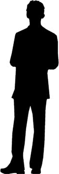

At 5:36 p.m. AST On March 27, 1964 600 miles of fault near Anchorage, Alaska ruptured, resulting in the second most powerful earthquake ever recorded. Roughly four hours later the first of four tsunami waves caused by the quake reached Crescent City, California. The first wave merely resulted in localized flooding. The second and third were smaller than the first and had little effect. The fourth wave, however, struck the city with a height of about six meters (20 feet) after having pulled most of the water from the harbor. After the dust had settled the damage was tallied: over 100 injured; 12 confirmed dead; 289 buildings destroyed; 100 cars and 25 large fishing ships crushed; 60 blocks inundated with 30 beyond repair.
Due to its offshore geography, Crescent City, and especially its harbor, are unusually susceptible to tsunamis. Since 1964 the city has sustained damage from a number of additional earthquakes. The 2005 Eureka earthquake caused the entire city to be evacuated. In November 2006, an earthquake by the Kuril Islands in the western Pacific created a tsunami which damaged multiple docks and boats. The 9.0 earthquake that struck Japan on March 11, 2011 produced a tsunami which destroyed 35 boats and damaged the harbor severely.
To improve Crescent City’s preparedness going forward, researchers seek to better understand the impact of tsunamis arising from a number of possible seismic events. One approach is to use numerical simulations to predict tsunami damage. The process of modeling a tsunami begins with the specification of the seismic event causing the tsunami. This entails stipulating a slip pattern, which measures where and to what degree the ocean floor moves in during the earthquake, and the location of the earthquake. The slip pattern determines how water is displaced, leading to the initial formation of the tsunami. The virtual tsunami is then tracked from the epicenter of the seismic event, across the ocean, and to the Crescent City harbor to determine the degree of inland flooding, known as inundation. The inundation levels predicted by several simulations, each with different seismic events, are shown below.

Notice that the simulated tsunamis have vastly different impacts on Crescent City in terms of flooding. In order to understand the “overall” tsunami risk posed to the city, we should take into account the characteristics of each.
The tsunamis which affect Crescent City are caused by earthquakes which come in two flavors. First, there are the earthquakes originating in the Cascadia Subduction Zone, which are referred to as near-field events (since they occur relatively nearby). Since near-field events have a limited geographic area in which they can occur and due to the nature of the local tectonic plates, they occur relatively infrequently. According to the simulations they also tend to be extremely damaging. And because they originate nearby, they reach Crescent City quickly, leaving inhabitants less time to evacuate.
The complement of near-field events are called far-field events. These can occur in a much broader range of locations, and hence are much more common. However, the greater distance of the West Coast from the earthquake's origin means that the resulting tsunamis usually have less severe effects. The far-field events in our simulations come from Alaska and the Aleutian Islands, Southern Chile, Kamchatka, the Kuril Islands, and Tohoku, Japan.
As described above, near- and far-field events differ in terms of how likely they are to take place. But individual simulated events from the same (or close) locations can also differ in how likely they are to occur, based on properties of the tectonic plates in that location. Associated with each earthquake is its annual probability of occurrence. The annual probability of an event describes the odds that the event will happen sometime in a single year. For example, an event with annual probability 1/100 has a 1 in 100 chance of occuring any given year. It does not, however, guarantee that the event will happen in the next 100 years (more on that later). These probabilities are usually not known exactly, and are instead estimated by experts.
Given that we do not know in advance what kind of seismic event will happen next, we would like to combine the information from all the simulations into one aggregate inundation map. We start by picking an annual probability, p, in which we are interested. For each point in a region of the map we then use the results of all the simulations to figure out the maximum amount of flooding that the simulations predict could occur with probability at least p. The result is a map which shows the “worst-case” amount of flooding one would expect to occur with annual probability p. We can vary p to produce more such maps and get an idea of how likely different levels of inundation might be.
We show a collection of these “inundation maps” below. You can modify the probability using the slider. You can also see how the map changes when you restrict to just near-field or just far-field events using different tabs. Some of the individual simulations that informed the inundation map are shown on the right. If you are interested in a particular point, you can click it in the large map and the small maps will shift focus to your point.
Supplementary Material
If you are curious about the technical details behind the tsunami simulations, the full report can be found here.
One of the researchers involved in the project, Randy LeVeque, has a set of Jupyter notebooks describing the process of creating inundation maps on his Github page.
Acknowledgements
The black star marker in the maps
comes from ANGELUS on Wikipedia Commons, and is licensed under the Creative Commons license.
{kind=link}